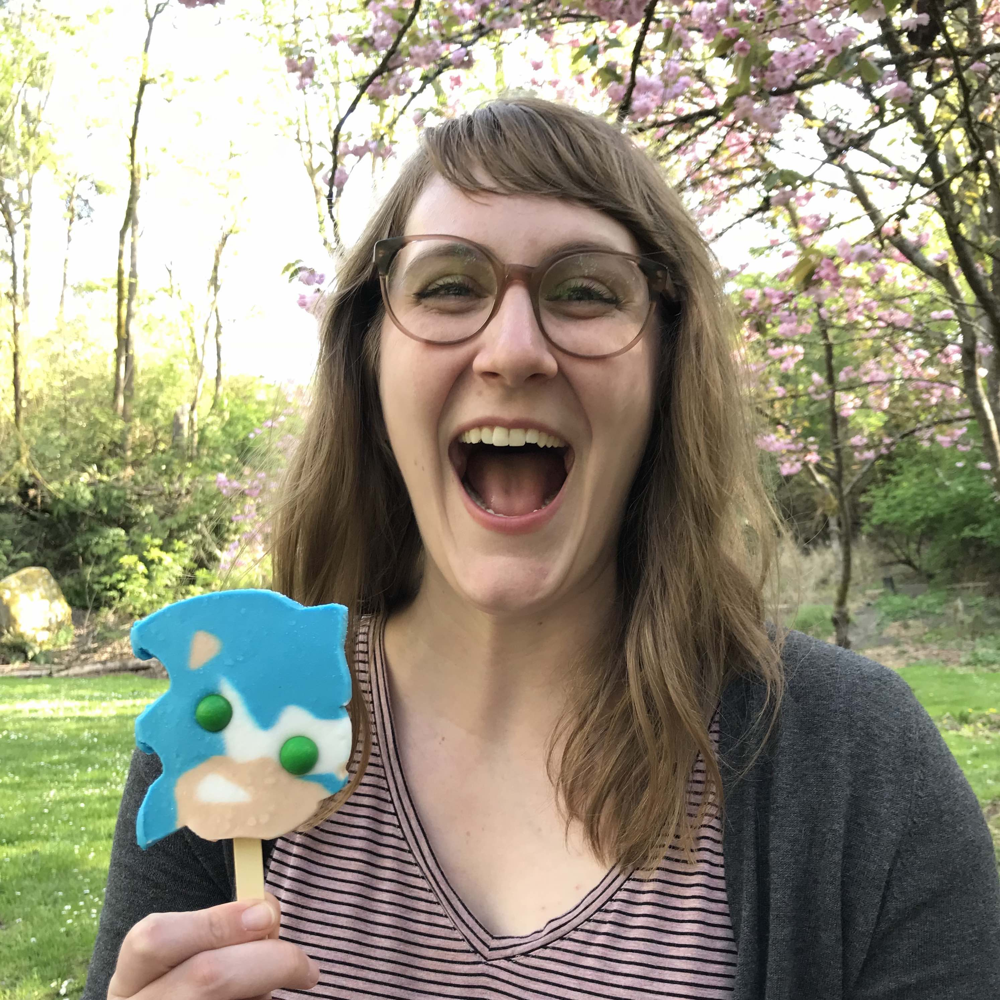

Becca Lee
Get to Know Me
Nice to meet you! My name's Becca and I'm a Seattle-based JavaScript student and tech marketer. I'm a voracious
learner who loves to translate my knowledge and intuition into thoughtful coding and marketing strategies. When
I'm not working, you can find me cuddling cats, baking pies, eating ice cream, playing pinball, getting excited
about neighborhood dogs, going on hikes, and watching pro wrestling (but you already know some of that from our
Q & A fun!).
Goals
I'm excited to be learning JavaScript and looking forward to having enough mastery to be able to help others
learn. All in good time!
Education
- I'm currently in Code Fellows 201 working on my Certificate of Software Development.
- In 2016 I completed my Bachelor of Science in Marketing Management from WGU Washington.
- Back in another life, I completed my AAS in Apparel Design and Services in 2007.
Career History
| Job Title |
Company |
Dates |
| Marketing Manager |
Formidable |
Feb 2017 - Jul 2018 |
| Marketing Coordinator |
Marx Foods |
Sep 2014 - Aug 2016 |
| Administrative Coordinator |
Ada Developers Academy |
Mar 2014 - Sep 2014 |
For more info on my career visit my LinkedIn page.
10 Fun Facts About Me
- I didn't get my first driver's license until I was 29
- I've never been stung by a bee
- I've never broken a bone
- I can do an extremely good single eyebrow raise (The Rock would be proud)
- I can trace my path to learning to code through a series of events dating back to 2013
- I've never had a dog, but desperately want one someday
- London is my favorite place I've ever travelled to
- I love baking, especially pies
- I got really into canning one summer and did a different fruit or vegetable every weekend. It was... a lot.
- I like going on walks around Green Lake, partially for the exercise, and partially for the dog watching